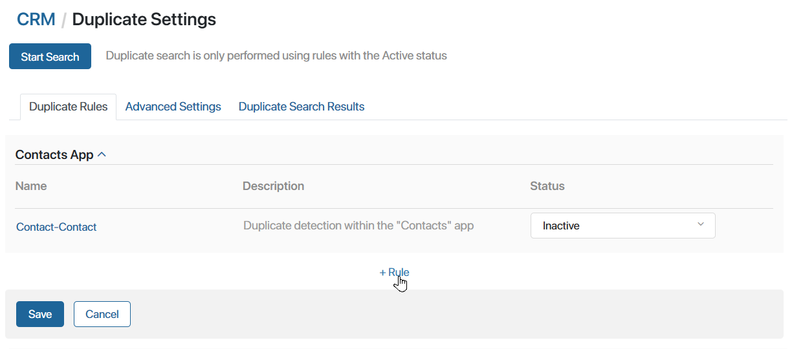
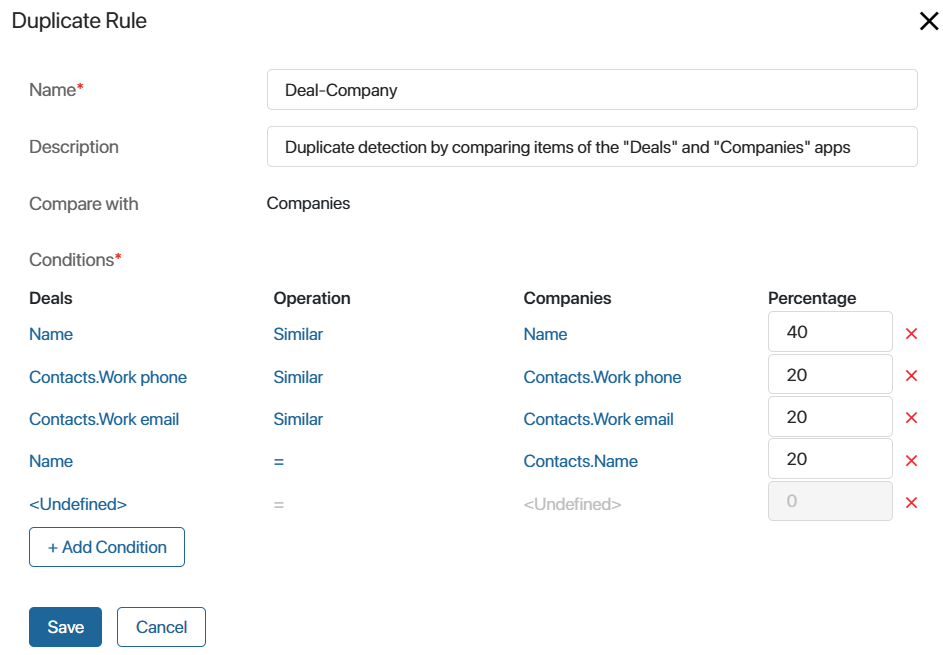
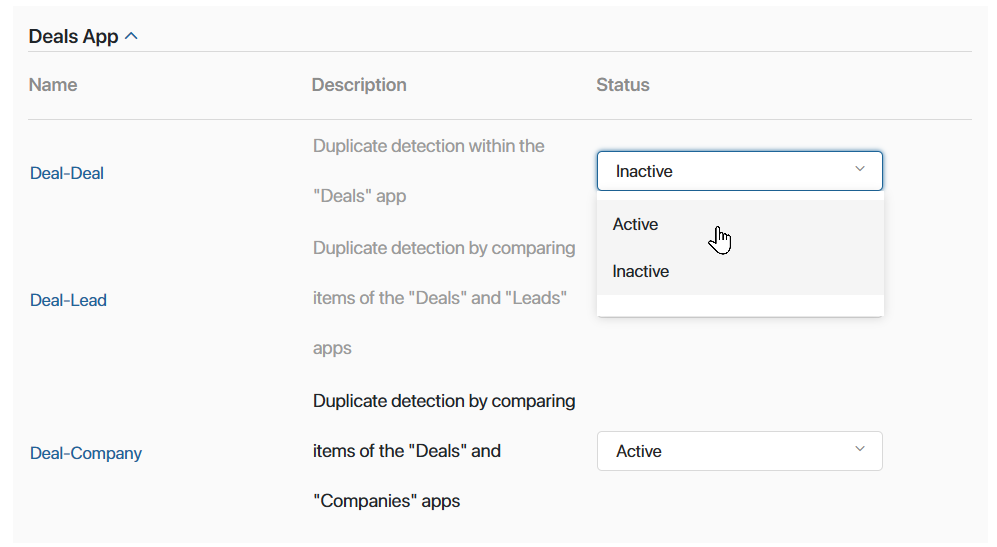

You can adjust the duplicate detection rules preconfigured for apps from the CRM workspace, as well as set your own rules in any system workspace.
начало внимание
Only users included in the Administrators group can set up duplicate detection rules.
конец внимание
Click the gear icon next to the workspace’s name and select Duplicate Settings. On the opened Duplicate Rules tab, you can:
- Edit an existing rule by clicking on its name.
- Create a new rule by clicking +Rule at the bottom of the page

Please note that custom rules only compare items within the same app. You cannot configure comparison with the items from another app.
Configure a rule
In the opened window, specify the field values.

- Rule name*. The name that will be displayed in the list of rules.
- Description. The description of the rule.
- Compare with. The field is displayed for the preconfigured Lead—Deal, Lead—Company, Deal—Lead and Deal—Company rules. The app with whose items the matching is performed is specified here.
- App. The field is displayed for rules where duplicates are searched for within a single app. Select the app whose items will be compared with each other.
- Conditions*. The rules that are used to match fields in app items. The table has four columns:
- The field of the app that the rule is set up for.
- The Operation, that is, one of the two comparison operators:
- Equals (=). Only exact matches will be considered potential duplicates.
- Similar. Duplicates define items whose fields contain the same information. Matches are checked by alphabetic and numeric values, excluding symbols. For example, a search for duplicates for the company Helix A will result in the items Helix and Helix A B, and the record Helix_A_B will not be found. The option is available for the following data types: String, Category, Account, Phone number, Email, and Link.
In BRIX On-Premises Enterprise and BRIX SaaS Enterprise deliveries, a full-text search for duplicates is available, taking into account characters in fields of String type. To enable this option, the system administrator should contact BRIX tech support.
- The field of the second app participating in the duplicate check.
- Percentage. The value of the rule as a percentage. Please note that the percentages of all matches found during a duplicate check are added together, and the total is shown in the search results. For example, a rule includes two conditions for two fields, and each has a Percentage of 50%. If both of these fields in two app items are exact matches, the probability of it being a duplicate will be 100%.
You can edit or delete a duplicate detection condition. You can also create a new one by clicking the +Condition button and setting up the comparison parameters. To select the fields that need to be compared, click the <Not defined> link. Note that the Search and sort by field option needs to be enabled for the fields you choose. If it is disabled, you will see a notification.
When finished, save the settings.
If you add a new rule, it will be enabled automatically. If you modify a preconfigured rule, remember to enable it by setting its status to Active in the list.

To have the rule applied, click Save on the duplicate settings page.
Now, when creating a new app item, a uniqueness check will be automatically performed. If the new record duplicates an existing one, the user will see a notification about the data match. For more refer to Detect duplicates when creating new app items.
In addition, you can check duplicates among all added app items at any time.
The system also provides advanced settings for duplicate detection, which are applied to all rules in the workspace. You can set the percentage of data match at which an item is considered a duplicate, define the minimum length of fields to be checked, and set the statuses of the considered items. Read more in Advanced duplicate search settings.
Found a typo? Select it and press Ctrl+Enter to send us feedback